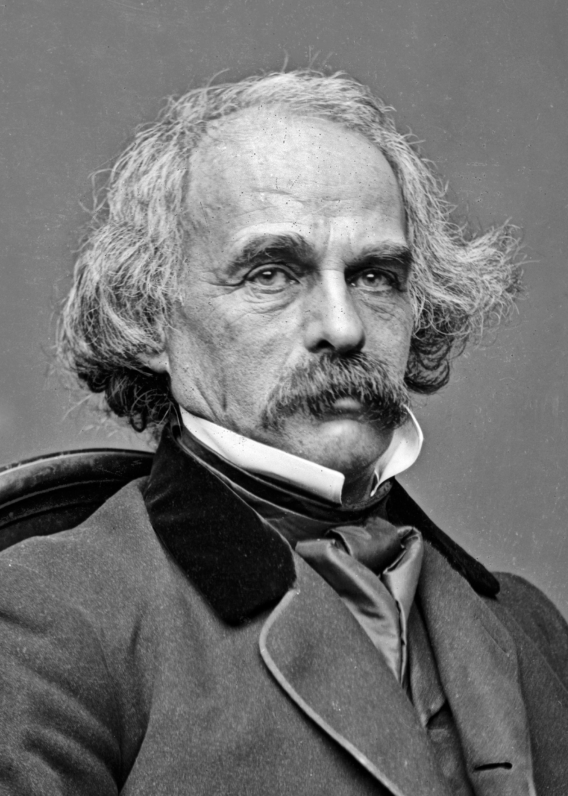

|  | Nathaniel Hawthorne, (born July 4, 1804, Salem, Massachusetts, U.S.—died May 19, 1864, Plymouth, New Hampshire), American novelist and short-story writer who was a master of the allegorical and symbolic tale. One of the greatest fiction writers in American literature, he is best known for The Scarlet Letter (1850) and The House of the Seven Gables (1851). |
| Hawthorne’s high rank among American fiction writers is the result of at least three considerations. First, he was a skillful craftsman with an impressive arthitectonic sense of form. The structure of The Scarlet Letter, for example, is so tightly integrated that no chapter, no paragraph, even, could be omitted without doing violence to the whole. The book’s four characters are inextricably bound together in the tangled web of a life situation that seems to have no solution, and the tightly woven plot has a unity of action that rises slowly but inexorably to the climactic scene of Dimmesdale’s public confession. The same tight construction is found in Hawthorne’s other writings also, especially in the shorter pieces, or “tales.” Hawthorne was also the master of a classic literary style that is remarkable for its directness, its clarity, its firmness, and its sureness of idiom. | |
| A second reason for Hawthorne’s greatness is his moral insight. He inherited the Puritan tradition of moral earnestness, and he was deeply concerned with the concepts of original sin and guilt and the claims of law and conscience. Hawthorne rejected what he saw as the Transcendentalists’ transparent optimism about the potentialities of human nature. Instead he looked more deeply and perhaps more honestly into life, finding in it much suffering and conflict but also finding the redeeming power of love. There is no Romantic escape in his works, but rather a firm and resolute scrutiny of the psychological and moral facts of the human condition. | |
| A third reason for Hawthorne’s eminence is his mastery of allegory and symbolism. His fictional characters’ actions and dilemmas fairly obviously express larger generalizations about the problems of human existence. But with Hawthorne this leads not to unconvincing pasteboard figures with explanatory labels attached but to a sombre, concentrated emotional involvement with his characters that has the power, the gravity, and the inevitability of true tragedy. His use of symbolism in The Scarlet Letter is particularly effective, and the scarlet letter itself takes on a wider significance and application that is out of all proportion to its literal character as a scrap of cloth. | |
| Hawthorne’s work initiated the most durable tradition in American fiction, that of the symbolic romance that assumes the universality of guilt and explores the complexities and ambiguities of man’s choices. His greatest short stories and The Scarlet Letter are marked by a depth of psychological and moral insight seldom equaled by any American writer. |
Nathaniel Hawthorne, (born July 4, 1804, Salem, Massachusetts, U.S.—died May 19, 1864, Plymouth, New Hampshire), American novelist and short-story writer who was a master of the allegorical and symbolic tale. One of the greatest fiction writers in American literature, he is best known for The Scarlet Letter (1850) and The House of the Seven Gables (1851).
Hawthorne’s high rank among American fiction writers is the result of at least three considerations. First, he was a skillful craftsman with an impressive arthitectonic sense of form. The structure of The Scarlet Letter, for example, is so tightly integrated that no chapter, no paragraph, even, could be omitted without doing violence to the whole. The book’s four characters are inextricably bound together in the tangled web of a life situation that seems to have no solution, and the tightly woven plot has a unity of action that rises slowly but inexorably to the climactic scene of Dimmesdale’s public confession. The same tight construction is found in Hawthorne’s other writings also, especially in the shorter pieces, or “tales.” Hawthorne was also the master of a classic literary style that is remarkable for its directness, its clarity, its firmness, and its sureness of idiom.
A second reason for Hawthorne’s greatness is his moral insight. He inherited the Puritan tradition of moral earnestness, and he was deeply concerned with the concepts of original sin and guilt and the claims of law and conscience. Hawthorne rejected what he saw as the Transcendentalists’ transparent optimism about the potentialities of human nature. Instead he looked more deeply and perhaps more honestly into life, finding in it much suffering and conflict but also finding the redeeming power of love. There is no Romantic escape in his works, but rather a firm and resolute scrutiny of the psychological and moral facts of the human condition.
A third reason for Hawthorne’s eminence is his mastery of allegory and symbolism. His fictional characters’ actions and dilemmas fairly obviously express larger generalizations about the problems of human existence. But with Hawthorne this leads not to unconvincing pasteboard figures with explanatory labels attached but to a sombre, concentrated emotional involvement with his characters that has the power, the gravity, and the inevitability of true tragedy. His use of symbolism in The Scarlet Letter is particularly effective, and the scarlet letter itself takes on a wider significance and application that is out of all proportion to its literal character as a scrap of cloth.
Hawthorne’s work initiated the most durable tradition in American fiction, that of the symbolic romance that assumes the universality of guilt and explores the complexities and ambiguities of man’s choices. His greatest short stories and The Scarlet Letter are marked by a depth of psychological and moral insight seldom equaled by any American writer.